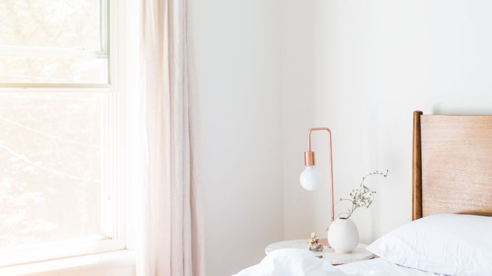

「布団を洗いたいけれど、大きすぎて家の洗濯機では無理」「クリーニング店まで運ぶのが大変」——そんな悩みを解決してくれるのが、布団の宅配クリーニングです。玄関で集荷してもらい、きれいになった布団を受け取るだけ。重い布団を運ぶ必要がありません。
この記事では、宅配クリーニングの選び方のポイントと、利用する前に知っておきたい注意点を、分かりやすくまとめました。
布団の宅配クリーニングとは
宅配クリーニングは、自宅にいながら布団をクリーニングに出せるサービスです。流れはとてもシンプルです。
- ネットで申し込む
- 自宅に集荷キット（袋）が届く
- 布団を詰めて、宅配業者に渡す
- 1〜2週間ほどで、きれいになった布団が届く
店舗に持ち込む必要がないので、小さなお子さんがいる家庭や、仕事で忙しい方、車を持っていない方にも便利です。
選び方の4つのポイント
布団の宅配クリーニングを選ぶときは、次の4点を見比べると失敗しにくくなります。
1. 料金（1枚あたりいくらか）
布団クリーニングの料金相場は、シングルサイズで1枚あたり約3,000〜6,000円、羽毛布団はやや高く約4,000〜8,000円が目安です。
ポイントは、1枚だけ出すより、複数枚まとめて出す方が、1枚あたりの料金が安くなること。家族分の布団や、こたつ布団、毛布などを一緒に出すと、送料やパック料金の面で無駄が少なくなります。
2. 保管サービスの有無
多くの宅配クリーニングには、「クリーニング後、次のシーズンまで預かってくれる保管サービス」があります。保管期間は数か月〜最長15か月ほど。
押し入れやクローゼットが狭い家庭にとっては、オフシーズンの布団を預けられるのは大きなメリットです。収納スペースを空けられます。
3. 仕上がりまでの日数
申し込んでから布団が戻るまで、一般的に1〜2週間ほどかかります。急ぎの場合は、最短日数が短いサービスを選びましょう。保管サービスを使う場合は、戻ってくる日を自分で指定できることが多いです。
4. 対応している品目
羽毛布団・敷布団・毛布など、洗える品目はサービスによって異なります。中には、ペットの毛やおしっこが付いた布団、シルクの布団に対応しているところもあります。自分が出したい布団が対応しているか、申し込み前に確認しましょう。
利用するときの注意点

注意
- シミや汚れが完全に落ちないこともある：古いシミや特殊な汚れは、落ちきらない場合があります。気になる場合は、申し込み時に相談できるサービスを選ぶと安心です。
- 送料が別途かかる地域がある：北海道・沖縄・離島は、別途送料がかかることがあります。
- 繁忙期は時間がかかる：衣替えのシーズン（春・秋）は申し込みが集中し、通常より日数がかかることがあります。早めの依頼がおすすめです。
おすすめサービス比較表
| サービス | 料金の目安 | 保管 | 特徴 | 申込み |
|---|---|---|---|---|
| イチオシふとんクリーニングのフレスコ | 羽毛掛布団2点 11,990円 | 公式サイトで確認 | 布団丸洗い専門。全国送料無料・決済手数料無料 | 料金を見る |
| 2しももとクリーニング | 羽毛布団3枚 13,800円 | 公式サイトで確認 | 他の人の布団と一緒に洗わない「完全個別洗い」 | 料金を見る |
| 3ポニークリーニング | 公式サイトで確認 | 最大9か月 | 創業60年の老舗。保管付き | 料金を見る |
※料金・内容は各社の公式情報・広告素材の記載をもとにした目安です（2026年10月時点）。最新の料金・条件は必ず公式サイトでご確認ください。
よくある質問
何枚からお願いできますか？
1枚から対応しているサービスが多いですが、複数枚まとめた「パック」の方が割安です。
どのくらいの頻度で出せばいいですか？
一般的には、年に1回を目安にすると、清潔な状態を保ちやすいといわれています。汗や皮脂、ダニが気になる方は、シーズンの変わり目に出すのがおすすめです。
洗ったあとはふかふかになりますか？
丸洗いすることで、中の汚れやへたりが改善し、ふっくら感が戻りやすくなります。
まとめ
この記事のポイント
- 布団の宅配クリーニングは、玄関で預けて受け取るだけの手軽なサービス
- 選ぶときは「料金・保管・日数・対応品目」の4点を比較する
- 複数枚まとめて出すと、1枚あたりが安くなる
- 衣替えシーズンは混み合うので、早めの申し込みがおすすめ
重い布団を運ぶ手間なく、プロの手でふかふかに仕上げてもらえる宅配クリーニング。押し入れの収納にも困らなくなるので、一度試してみる価値があります。